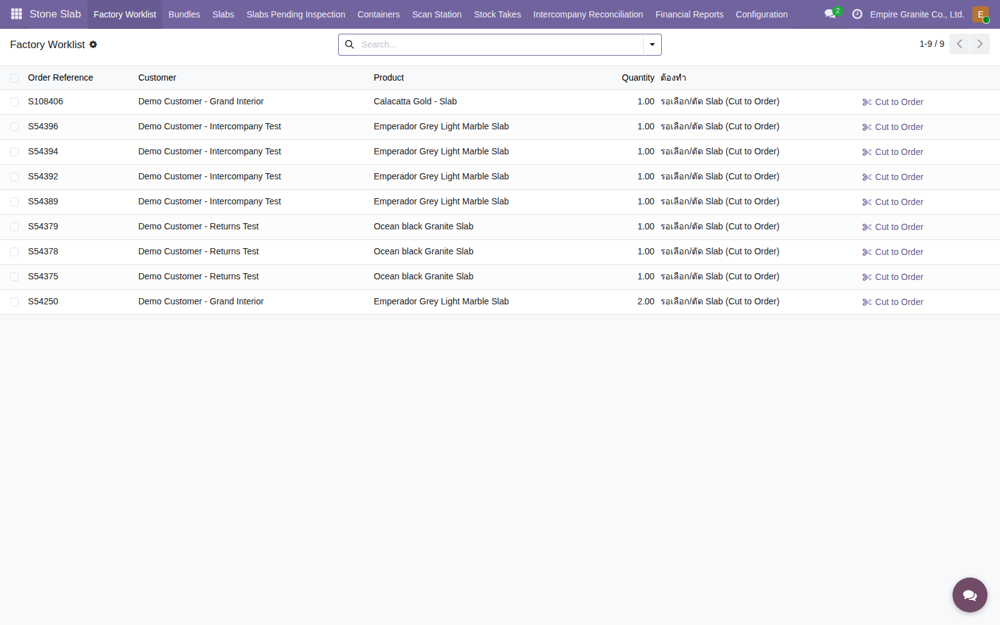

แผนผังขั้นตอน
Flow โหมด 3 ทั้งหมด — 4 ฝ่าย 8 ขั้นตอน

เริ่มนับจากมี Block พร้อมอยู่แล้ว — จุดต่างจากโหมด 2 คือ SO ถูกยืนยันไปก่อนโดยยังไม่มีแผ่นจริง แล้วขั้นตอน "รับช่วงตัด" จะย้อนกลับไปที่ฝ่ายคลัง/ผลิตอีกครั้งผ่านหน้า Factory Worklist — กล่องที่กำลังอธิบายจะถูก ไฮไลท์สีแดง ทีละขั้นตอน
หมายเหตุ: แผนผังนี้ยังเป็นเวอร์ชันก่อนดีไซน์ใหม่ 2026-08-16 (ยังไม่มีกล่อง "ย้าย Block ไปสถานีตัด") — จำนวนขั้นตอนจริงตอนนี้คือ 8 ไม่ใช่ 6 กล่องตามภาพ ดูขั้นตอนที่ 5 (ย้าย Block) แยกในสไลด์ถัดไป
ขั้นตอนที่ 1 / 8 · ฝ่ายขาย
เปิด Sale Order → เพิ่มบรรทัดสินค้า Slab-tracked

คลิกรูปเพื่อขยาย

S108406 — ลูกค้า Demo Customer - Grand Interior สั่ง "Calacatta Gold - Slab" 1 หน่วย
ฝ่ายขายเลือกสินค้าตัวเดียวกับโหมด 2 ได้เลย — ระบบรู้เองว่าจะให้เลือกจากสต็อกที่มี (Select Slabs) หรือสั่งตัดใหม่ (Cut to Order) ตอนหลังจากดูว่ามีของพร้อมหรือไม่
ขั้นตอนที่ 2 / 8 · ฝ่ายขาย
ยืนยัน SO — ราคาที่เห็นตอนนี้ยังไม่ใช่ราคาจริง

คลิกรูปเพื่อขยาย
ยืนยันแล้ว ยอดรวมขึ้น 4,815.00 บาท — เป็นแค่ราคาตั้งต้นของสินค้า ยังไม่ผูกกับขนาดแผ่นจริงเลย
ข้อควรระวังจริง: ฝ่ายขายยืนยัน SO ได้ทันทีโดยยังไม่ต้องรู้ว่าจะตัดแผ่นขนาดเท่าไหร่ — ราคาที่ขึ้นตอนนี้เป็นราคาตั้งต้นของสินค้าเฉยๆ (Default Sales Price) ไม่ใช่ราคาจริง ราคาจริงจะถูกคำนวณใหม่อัตโนมัติหลังฝ่ายผลิตตัดแผ่นเสร็จ (ดูขั้นตอนที่ 7)
ขั้นตอนที่ 3 / 8 · ฝ่ายคลัง/ผลิต
Factory Worklist — คิวงานที่ขึ้นอัตโนมัติ ไม่ต้องรอฝ่ายขายบอก

คลิกรูปเพื่อขยาย

หน้า Factory Worklist — S108406 ขึ้นคิวพร้อมป้าย "รอเลือก/ตัด Slab (Cut to Order)" และปุ่มกดตัดได้จากหน้านี้เลย
จุดสำคัญของโหมดนี้: ทุก SO ที่ยืนยันแล้วแต่ยังไม่มีของจริงจะขึ้นคิวรวมกันที่หน้านี้อัตโนมัติ — ฝ่ายผลิตเข้ามาดูคิวงานของตัวเองได้เลย ไม่ต้องให้ฝ่ายขายเดินมาบอกหรือเปิด SO ให้ดูทีละใบ (ตามที่ลูกค้าเคยขอไว้: ฝ่ายขายไม่ควรเป็นคนตัดสินใจว่าจะตัดก้อนไหน)
ขั้นตอนที่ 4 / 8 · ฝ่ายคลัง/ผลิต
กด Cut to Order — เลือกก้อนที่จะตัด + ระบุขนาดที่ต้องการ

คลิกรูปเพื่อขยาย

เลือกก้อน BDL-00016 ระบุขนาดที่จะตัด 2.80 × 1.60 ม. — ระบบเช็คเองว่าก้อนนี้เหลือพอตัดหรือไม่ก่อนสร้างใบสั่งผลิต
ฝ่ายผลิตเป็นคนเลือกเองว่าจะตัดจากก้อนไหน ขนาดเท่าไหร่ — ถ้าเผลอเลือกขนาดที่มีของพร้อมขายอยู่แล้ว ระบบจะเตือนเป็นข้อความแจ้งเตือน (ไม่บล็อก) ให้ลองเช็ค Select Slabs ก่อนตัดใหม่
ขั้นตอนที่ 5 / 8 · ฝ่ายคลัง/ผลิต
ก่อนตัดจริง ต้องย้าย Block ไปสถานีตัดก่อน (ดีไซน์ใหม่ 2026-08-16)
กด Create Cut Order ทั้งที่ Block ยังไม่ได้ย้าย

ย้ายผ่าน Internal Transfer เสร็จแล้ว
ดีไซน์ใหม่ (2026-08-16): Block ต้องถูกย้ายจาก Location "Stone Available" ไป "Stone Production" ก่อนเสมอ (Internal Transfer ปกติของ Odoo — สแกนผ่าน Barcode app ได้) ถึงจะกด "Create Cut Order" สำเร็จ จำลองขั้นตอนหน้างานจริงที่ต้องยกก้อนหินไปวางที่แท่นตัดก่อน — ถ้าลืม ระบบบล็อกทันทีด้วย error "Invalid Operation" ก่อนสร้าง MO ใดๆ (ไม่ใช่แค่เตือนเฉยๆ) ตัวอย่างจริง: Block BLK-26-0001, ย้าย 5.00 m³ ผ่าน EG01/INT/00043
ขั้นตอนที่ 6 / 8 · ฝ่ายคลัง/ผลิต
ตัดจริง กด "Complete Cut" — ราคา SO คำนวณใหม่อัตโนมัติทันที
Manufacturing Order เสร็จสิ้น

SO ราคาอัปเดตอัตโนมัติ

จุดสำคัญของโหมดนี้: พอกด "Complete Cut" ระบบสร้าง Slab ใหม่พร้อมเลข Serial (BDL-00016-1) อัตโนมัติ ผูกกับ SO line ทันที และคำนวณราคาจากขนาดจริงที่ตัดได้ (2.80×1.60 ม. = 4.48 ตร.ม. × 9,500 บาท) ให้เองเป็น 42,560 บาท — ไม่ต้องกลับไปแก้ SO เองเหมือนโหมด 2 เพราะขนาด Purchased L/H ถูกกรอกให้อัตโนมัติจากขนาดที่ตั้งไว้ตอนสั่งตัด
ขั้นตอนที่ 7 / 8 · ฝ่ายส่งของ
ส่งของ — ต้องสแกน Serial ยืนยันตรงแผ่นก่อน Validate ได้
พยายาม Validate โดยยังไม่สแกน

กรอก Scanned Serial ให้ตรง

เหมือนโหมด 2: แผ่นที่ตัดตามสั่งก็ยังเป็นสต็อกแบบ Serial เหมือนกัน — ระบบบังคับสแกน/กรอกเลข Serial ให้ตรงกับแผ่นที่ตัดจริงก่อนกด Validate เสมอ ป้องกันส่งผิดแผ่นให้ลูกค้า
ขั้นตอนที่ 8 / 8 · ฝ่ายบัญชี
ออกใบแจ้งหนี้ — VAT 7% ตามปกติ

คลิกรูปเพื่อขยาย

INV/2026/00018 — Posted, ยอดรวม 45,539.20 บาท (รวม VAT 7%) ตรงกับราคาที่คำนวณอัตโนมัติหลังตัดแผ่นเสร็จ
หลัง Delivery เสร็จ กด Create Invoice ได้ทันที — ราคาที่คำนวณจากขนาดแผ่นจริงตอนตัดเสร็จไหลมาเป็นยอด Invoice โดยไม่ต้องแก้ไขอะไรเพิ่ม เหมือนโหมด 2